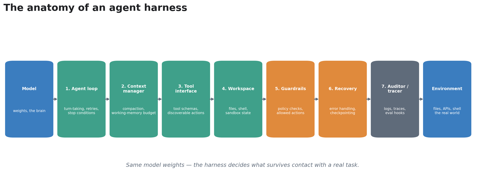
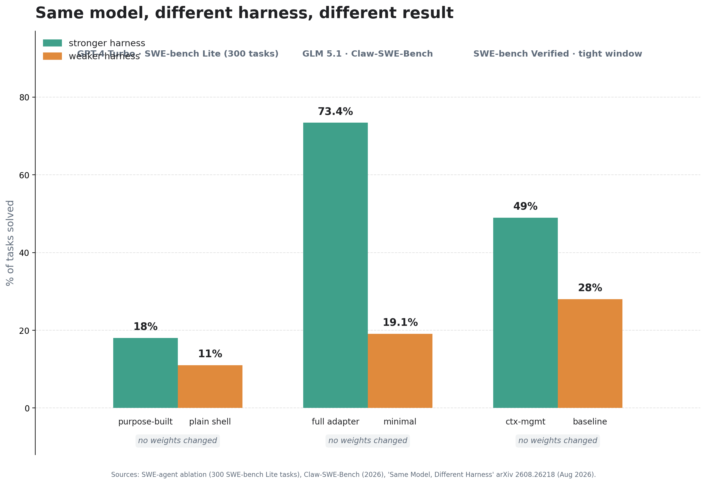
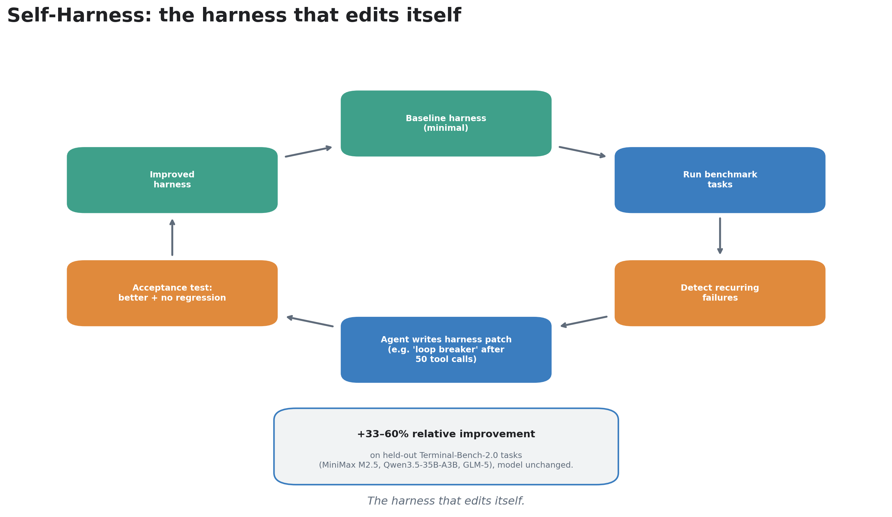
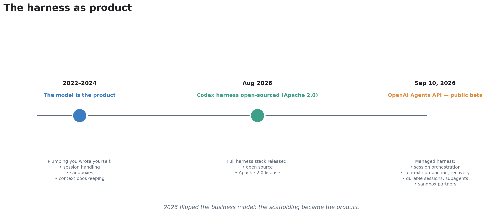

One-paste order for Medium's new-story editor: title → body → diagrams → notebook link → checklist.
Swap the model in your AI agent and you expect it to get smarter. Swap the harness — the loop, the context manager, the tool interface, the recovery logic — and the same weights score 28% on one benchmark and 49% on the next. In 2026, the industry finally stopped pretending the model is the agent. The evidence says the wrapper is the variable.
ELI5: the chef and the kitchen
Think of the language model as a brilliant chef. The harness is the entire kitchen around them: the recipe binder (context), the pantry and tools (tool interface), the workspace counters (state), the fire alarm and extinguishers (guardrails), the timer that says "stop plating and serve" (stopping rules), and the health inspector writing down everything that happened (tracing/audit).
Put that chef in a well-organized commercial kitchen and you get dinner service. Put the same chef in a dark room with a butter knife and you get nothing — not because the chef changed, but because everything the chef needed to act was missing. A harness is that kitchen: the system layer that decides what the model sees, which tools it can touch, how work continues after a failure, and when to stop. The model is the easy part. The kitchen is the hard part.
How it works: the seven layers of a harness
Every production agent is a loop. The model proposes, the harness executes. Concretely, a harness has seven jobs:
- The agent loop. Call the model → parse its action → run the tool → feed the result back → repeat. Trivial to write, treacherous to keep alive: a loop that runs for 3 days must survive process restarts.
- Context management. The context window is finite and expensive. The harness builds prompts, compresses or compacts old conversation, and shortens stale tool outputs as the window fills. Context resets that rescued a weak model become pure overhead on a strong one — so the strategy must fit the model.
- Tool interface. How tools are declared, how arguments are validated, how results are returned and truncated. One bad tool schema can burn thousands of tokens in retry loops.
- Workspace state. The files, databases, and scratch space the agent modifies. The harness versions it, isolates it (sandboxing), and makes it recoverable.
- Guardrails. Permissions, approval gates on irreversible actions, iteration caps. This is the accountability layer: no gain in reasoning power turns a model's confidence into permission to touch the ledger.
- Recovery. What happens when a tool hangs, an API returns garbage, or the run dies at hour 6 of 8. Retries with backoff, fallback paths, durable sessions that resume where they stopped.
- Audit and tracing. Every action recorded, every artifact validated against an output contract. Without this, you can't debug the agent — and you can't trust it.
Miss any one of these and the model can't help you. That's the mechanical reason 40% of agentic AI initiatives are projected to be discontinued by the end of 2027 (Gartner, via September 2026 industry coverage): not because the models were weak, but because the harness wasn't built.
State of the art
Harness-Bench put numbers on it (May 2026, arXiv 2605.27922). Researchers at Peking University and Qiyuan Tech built a diagnostic benchmark: 106 sandboxed, manually-reviewed tasks drawn from real agent-use patterns, 5,194 execution trajectories, same tasks and budgets across model-harness pairings. Result: substantial variation in completion, efficiency, and failure behavior — driven by the harness, not the weights. Their conclusion is the quote of the year: agent capability should be reported at the model-harness configuration level, not attributed to the base model alone. A companion analysis cited a 23.8-point gap between the best and worst configurable harnesses on shared tasks.
The ablations are brutal. Hold the model fixed, change only the wrapper, and scores swing wildly: GPT-4 Turbo solved 18.0% of 300 SWE-bench Lite tasks with a purpose-built codebase interface but only 11.0% driving a plain shell. A minimal versus full adapter on the same GLM 5.1 backbone scored 19.1% versus 73.4% on Claw-SWE-Bench. And in "Same Model, Different Harness" (arXiv 2608.26218, August 2026), a purely mechanical change — shortening older tool results as context filled, plus stalling detection — raised mean fail-to-pass fraction from 28% to 49% and complete solutions from 43 to 72 on a 169-task SWE-bench Verified cohort. No weights changed. The wrapper moved the score. (The honest counter-evidence: with a strong long-context model and a fully observable environment, simple scaffolding reached 50.8% on SWE-bench Verified — scaffolding that compensates for weak reasoning shrinks as models improve. Controls that carry accountability don't.)
Harnesses started editing themselves. Self-Harness (arXiv, reported September 2026) lets an agent rewrite its own runtime rules. Starting from a minimal harness on the DeepAgent SDK, it ran Terminal-Bench-2.0 tasks, detected recurring failure patterns, and wrote targeted patches — e.g., one model kept exploring dataset configurations until timeout, so the system wrote a "loop breaker" forcing it to stop after 50 tool calls and draft deliverables early. Held-out relative improvements: 33–60% across MiniMax M2.5, Qwen3.5-35B-A3B, and GLM-5 — model, tools, and benchmark held fixed; only the harness varied. The key design detail: an acceptance rule promotes only edits that improve failures without regressing other tasks.
The harness became the product. On September 10, 2026, OpenAI launched the Agents API in public beta: the managed Codex harness — session orchestration, automatic context compaction, recovery, durable sessions that run for days, sandboxes (OpenAI-managed, self-hosted, or via partners including Cloudflare, Modal, and Vercel), subagent parallelization (Ciridae's CTO reported 4× latency cuts), MCP and custom tool connections. One API call spins up a production-ready agent; you pay tokens and sandbox minutes, no harness fee. The strategic read, laid out when OpenAI open-sourced the Codex harness under Apache 2.0 in August 2026: give away the specification, sell the operated version. Gartner forecasts 40% of enterprise applications will include task-specific AI agents by the end of 2026, up from under 5% in 2025 — and the vendors are now competing on who runs the best kitchen, not who trains the best chef.
Takeaways
- The harness is a variable, not a detail. Budget for it like a model: the loop, context strategy, tool interface, workspace, guardrails, recovery, and audit are where agent projects live or die.
- Report model-harness pairs, not models. A benchmark score without the harness named is a chef rating without mentioning the kitchen.
- Context management is the highest-leverage layer. Compaction, stale-output shortening, and stall detection moved scores more than any other single change in 2026's studies.
- Separate compensation from accountability. Scaffolding that props up weak reasoning shrinks as models improve. Guardrails, permissions, and audit never do — no model gain turns confidence into authority to act.
- Buy or borrow before you build. With managed harnesses (Agents API) and open-sourced production harnesses (Codex, Apache 2.0), custom orchestration is now the risky option, not the safe one — and your evaluation burden (task-level evals, evidence artifacts) stays yours either way.
References: Harness-Bench: Measuring Harness Effects across Models in Realistic Agent Workflows (arXiv 2605.27922, May 2026, Peking University / Qiyuan Tech) · Same Model, Different Harness: Different Coding-Agent Results (arXiv 2608.26218, Aug 2026) · Self-Harness (arXiv, reported via VentureBeat, Sep 2026) · OpenAI Agents API public beta (announced Sep 10, 2026; Codex harness open-sourced Apache 2.0, Aug 2026) · Towards AI Fryday #8: 10 Agent Harnesses That Change What the Same Model Can Do (Sep 2026) · Oracle Developers: Building an agent harness that survives production (2026) · Gartner enterprise-agent forecasts via Sep 2026 coverage.
Diagrams
Diagram 1 — Anatomy of a harness — the seven layers

Diagram 2 — Same model, different harness — score swings from the wrapper alone

Diagram 3 — Self-editing harness — runtime rules rewritten from failure patterns

Diagram 4 — The harness as product — managed runtimes and the Agents API
